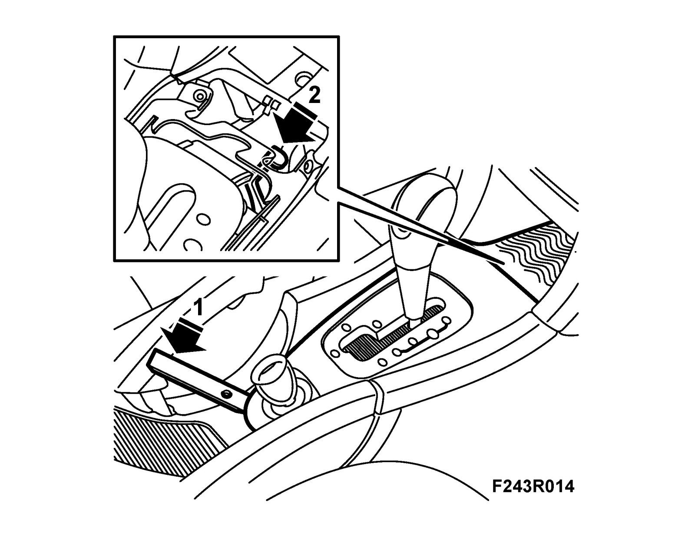

Procedures
Manual release of solenoid, selector lever, SHIFT LOCKIf there is no power, it will not be possible to move the selector lever because it is locked by the shift-lock solenoid. Proceed as follows to release it manually:
1. Remove the rubber mat. Use 82 93 474 Removal tool.

2. Press with a screwdriver and hold down the yellow catch lever in order to select other gear positions.
3. Fit the rubber mat.